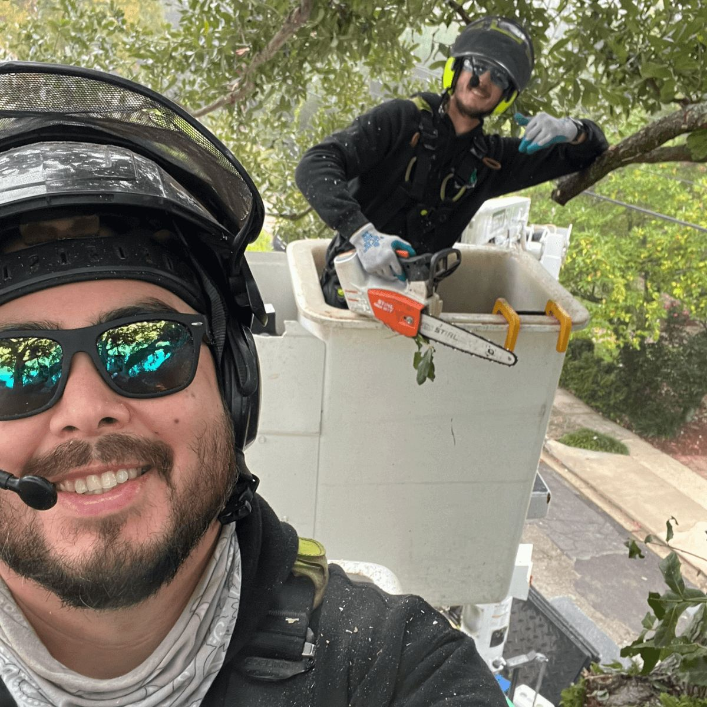
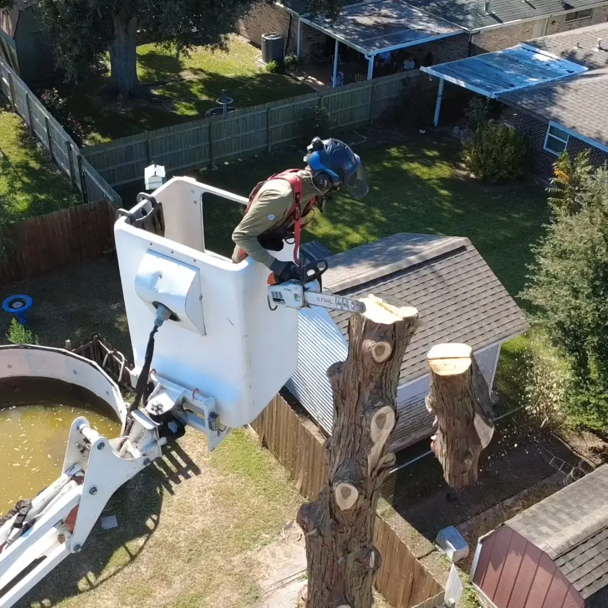
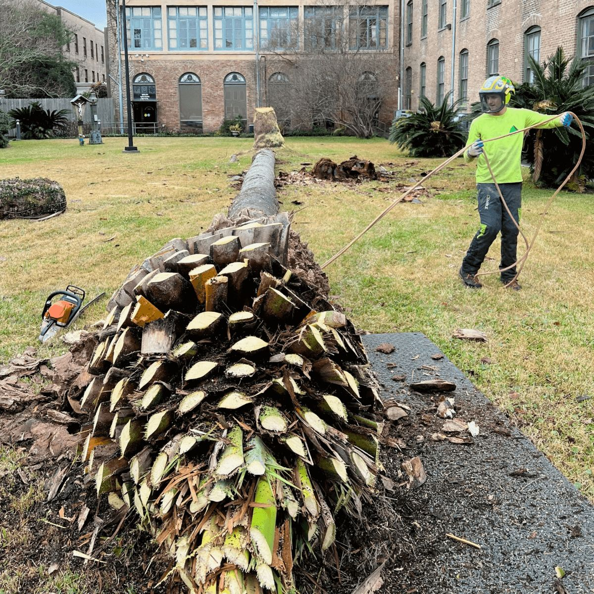

Environmental Considerations for Tree and Stump Removal
Environmental considerations for tree and stump removal are crucial aspects that must be taken into account when planning such projects. Trees play a vital role in maintaining biodiversity, preserving habitats, and providing numerous ecological benefits. Nevertheless, it may be necessary to remove trees or stumps for safety reasons or other factors.
Urgent or unsafe? Call (504) 732-0779


We will explore the environmental implications of tree and stump removal, as well as strategies for minimizing ecological damage during extraction activities, responsibly sourcing timber products afterward, managing debris generated by the process, restoring soil to promote ecosystem recovery after completion work is done and implementing erosion control measures throughout. We’ll talk about using environmentally friendly methods and tools to reduce the impact on nature when removing resources. Also, we’ll cover how to responsibly obtain wood products after extraction activities.
Furthermore, we will examine waste management strategies for debris generated by the removal process, soil restoration techniques enhancing ecosystem recovery after completion of work, and implementing erosion control measures throughout all stages involved within the project lifecycle. Additionally, we’ll explore how to protect endangered or protected species during tree/stump removal activities by engaging in habitat restoration efforts supporting their populations.
By understanding these environmental considerations for tree and stump removal processes and adopting sustainable practices in our approach towards them, homeowners and business owners alike can contribute significantly towards protecting our environment while addressing their specific needs.

Assessing Environmental Impact
Understanding the ecological value of trees and their role in the environment is crucial when considering tree and stump removal. Considering the consequences of habitat destruction and biodiversity decline, homeowners should take into account these potential impacts before deciding to remove trees or stumps.
The Role of Trees in Maintaining Biodiversity and Habitat Preservation
Trees provide essential benefits like oxygen production, carbon sequestration, soil stabilization, water filtration, and support for countless animal species. They also serve as a vital component of our planet’s biodiversity, ensuring healthy ecosystems that sustain life.
Potential Consequences of Tree and Stump Removal on Local Ecosystems
Removing trees may disrupt these delicate systems by reducing available habitats for wildlife or causing erosion issues. Additionally, improper disposal methods during tree stump extraction could lead to further environmental damage if not addressed responsibly.
Assessing environmental impact is essential to ensure that tree and stump removal does not have a negative effect on local ecosystems. We can keep our trees healthy without harming the environment by using strategies like relocation, pruning, and replanting.

Alternative Solutions to Tree Removal
Instead of complete tree removal, alternative options like tree relocation or pruning techniques can minimize disruption to natural habitats. Replanting strategies also play a vital role in offsetting the environmental impacts associated with removing trees from an area.
- Benefits and considerations for tree relocation: Relocating trees preserves their ecological value while providing aesthetic benefits. However, it’s essential to consult with certified arborists to ensure proper transplanting procedures are followed.
- Pruning techniques that maintain tree health while reducing environmental impact: Regular pruning and trimming, when done correctly, can extend the life of a tree without causing significant harm to surrounding ecosystems.
- Effective replanting strategies following tree removal: Planting new trees after removal helps replace lost habitat and biodiversity. Choose native species adapted to local conditions for the best results.
Alternative solutions to tree removal can help preserve the health of trees while minimizing environmental impact. Mitigating environmental impact during the removal process is an important step in ensuring a successful project outcome.

Mitigating Environmental Impact During Removal Process
Adopting best practices for minimizing environmental damage during both tree removal and stump extraction processes helps protect the surrounding environment. Proper waste management and recycling methods, along with soil restoration and erosion control measures, ensure post-removal ecosystem recovery remains viable long-term.
- Waste management and recycling methods: Efficient disposal of tree debris by turning it into wood chips, mulch, or compost can reduce the ecological impact of tree removal.
- Soil restoration techniques: Enhancing ecosystem recovery after completion of work through the use of organic matter, such as compost or biochar, to improve soil health.
- Erosion control measures: Implementing strategies like silt fences or straw wattles throughout all stages involved in the project lifecycle to prevent soil erosion caused by tree removal activities.
By implementing waste management and recycling methods, as well as soil restoration techniques during the removal process, we can ensure that our actions have a minimal environmental impact. Additionally, engaging in habitat restoration efforts for protected or endangered species will help to preserve their populations.

Protecting Endangered or Protected Species during Tree/Stump Removal Activities
Identifying endangered or protected species residing within targeted areas ensures compliance with relevant regulations aimed at preserving specific flora and fauna populations. Collaboration between service providers and environmental agencies plays a key part in this process, alongside engaging proactively toward habitat restoration initiatives supporting ongoing conservation efforts beyond mere regulatory adherence alone.
Engaging in habitat restoration efforts
- Prioritize the protection of endangered animal species during tree removal activities by consulting with local wildlife experts and following their guidance.
- Create awareness among clients about the importance of protecting vulnerable plant trees and animal species when planning for stump removal projects.
It is imperative to take into account the conservation of endangered or protected species during tree/stump removal operations, thus necessitating habitat restoration efforts that bolster these populations. To further ensure environmental sustainability, sustainable tree and stump removal practices should be implemented through eco-friendly equipment and techniques as well as responsible sourcing of timber products following extraction activities.

Sustainable Tree and Stump Removal Practices
Promoting sustainable forestry practices, responsible sourcing of wood products, training/certification programs for professionals, and educating clients/community members ensures ongoing commitment toward environmentally conscious service provision.
- Eco-friendly equipment: Minimizing ecological impact during the removal process by using low-emission machinery or manual tools.
- Responsible sourcing: Ensuring that timber products are obtained from sustainably managed forests.
- Training/certification programs: Encouraging industry professionals to adhere to best-practice guidelines through specialized courses such as those offered by the International Society of Arboriculture (ISA).
FAQs in Relation to Environmental Considerations for Tree and Stump Removal
What is the Environmental Impact of Tree Removal?
Cutting down trees can harm the environment in various ways, such as depriving animals of their homes, lowering air quality by reducing carbon dioxide absorption, causing soil erosion and water runoff, and disturbing nearby ecosystems. However, responsible tree management practices can help mitigate these effects. Learn more about sustainable forestry.
Is Stump Remover Bad for the Environment?
Stump removers typically use chemicals like potassium nitrate to break down wood fibers and facilitate decomposition. While these chemicals are generally not harmful in small quantities, improper use or disposal may contaminate soil or groundwater. It’s important to follow manufacturer instructions carefully and consider alternative methods like mechanical stump grinding.
What are the Environmental Issues with Trees?
Environmental problems related to trees include deforestation, which leads to the loss of habitats and contributes to climate change. Invasive species can also outcompete native flora, while pests and diseases can damage tree health. Urbanization can reduce green spaces, and improper pruning can cause damage or decay. Overwatering can lead to root rot or instability. Proper tree care education helps address these challenges, explore resources from International Society of Arboriculture.
What is the Environmental Impact of Logging?
Logging affects ecosystems by removing large amounts of biomass, disrupting habitats for plants and animals, increasing greenhouse gas emissions through deforestation-related processes (e.g., burning), altering hydrological cycles by affecting evapotranspiration rates, and increasing soil erosion. Sustainable logging practices, such as FSC certification, aim to minimize these impacts.
Understanding the environmental considerations for tree and stump removal is crucial. By assessing the ecological impact, considering alternative solutions, mitigating environmental damage, protecting endangered species, and implementing sustainable practices, we can ensure responsible tree and stump removal.A Perfect Cut Tree prioritizes environmental consciousness in our services. Contact us to experience eco-friendly tree and stump removal that meets your needs and safeguards our environment.
What to Photograph From a Safe Distance
Photos and video show us the tree, the property around it, how we would reach it, and any visible hazards.


Tree down or a limb on a line?
Skip the photos and call. Calls are answered 24/7.
(504) 732-0779Office hours: Monday to Friday 7 AM to 5 PM, Saturday 7 AM to 3 PM, closed Sunday.
More on Tree & Stump Removal


Ready to Show Us Your Tree?
Show us the tree. An arborist reviews what you send. Photos give us a first look. Some trees need an in-person visit before we can make a final recommendation.